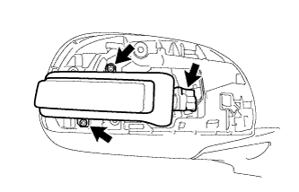

アウタリヤビューミラーASSY RH（サイドターンシグナルランプあり） 分解 |
| 1. アウタリヤビューミラー RH取りはずし |
 |
鏡面上部を押し下げ、鏡面を傾ける。
図に示す位置に保護テープを貼る。
リーフモールディングリムーバを使用して、ツメのかん合4箇所をはずす。
| 2. アウタミラー カバー RH取りはずし |
ツメA·B·C·DをアウタミラーカバーRH裏側から押し浮かせる。
浮かせた所をきっかけにし、ツメ8箇所のかん合をはずす。
アウタミラーカバーRHがサイドターンシグナルランプASSY RHに当たらないように、アウタミラーカバーRHを図のように取りはずす。
| 3. サイドターンシグナルランプASSY RH取りはずし |
|  |
スクリュー2本で、サイドターンシグナルランプASSY RHを切り離す。
コネクターを切り離し、サイドターンシグナルランプASSY RHを取りはずす。